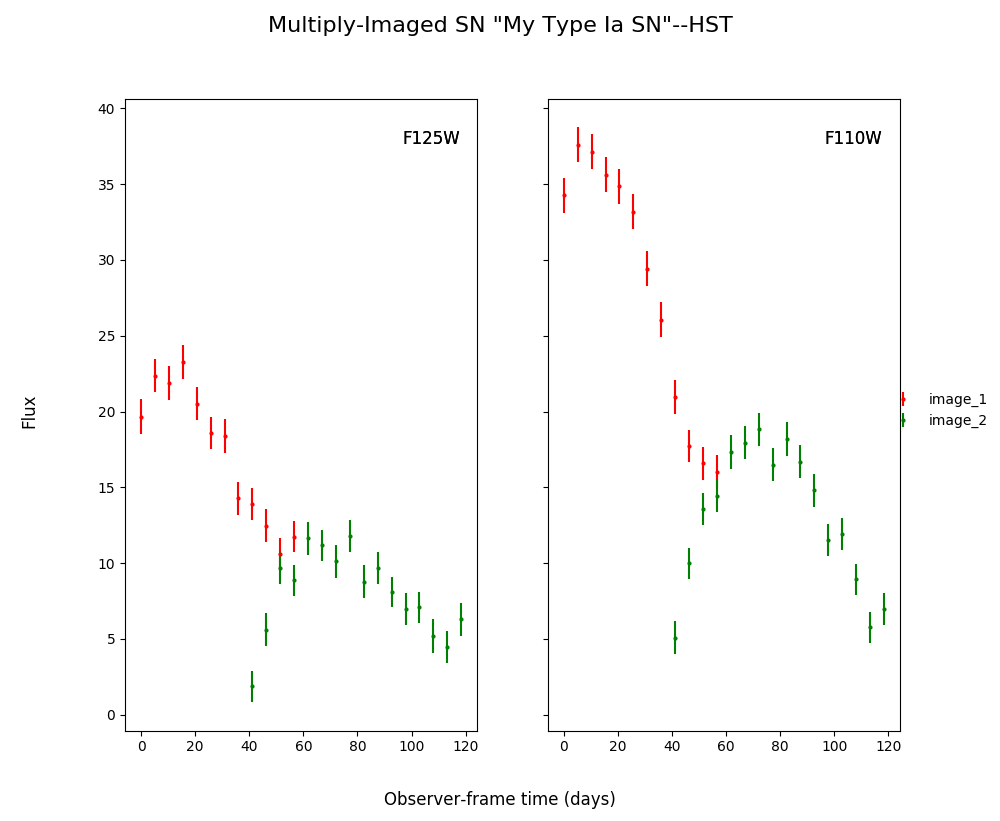

Simulating with SNTD¶
No Microlensing¶
Create a simulated multiply-imaged supernova that we can then fit, with no microlensing included in the simulation. Note that your final printed information will be different, as this is a randomly generated supernova.
import sntd
import matplotlib.pyplot as plt
myMISN = sntd.createMultiplyImagedSN(sourcename='salt2-extended', snType='Ia', redshift=1.33,z_lens=.53, bands=['F110W','F125W'],
zp=[26.8,26.2], cadence=5., epochs=35.,time_delays=[10., 70.], magnifications=[7,3.5],
objectName='My Type Ia SN',telescopename='HST')
print(myMISN)
myMISN.plot_object()
plt.show()
Out:
Telescope: HST
Object: My Type Ia SN
Number of bands: 2
------------------
Image: image_1:
Bands: ['F125W', 'F110W']
Date Range: 0.00000->56.61765
Number of points: 24
Metadata:
z:1.33
t0:10.0
x0:6.705277050626183e-06
x1:1.4432846464012696
c:0.06617632319259452
sourcez:1.33
hostebv:0.0967741935483871
lensebv:0
lensz:0.53
mu:7
td:10.0
------------------
Image: image_2:
Bands: ['F125W', 'F110W']
Date Range: 41.17647->118.38235
Number of points: 32
Metadata:
z:1.33
t0:70.0
x0:3.3526385253130915e-06
x1:1.4432846464012696
c:0.06617632319259452
sourcez:1.33
hostebv:0.0967741935483871
lensebv:0
lensz:0.53
mu:3.5
td:70.0
------------------
Out:
{kind=link}
Simulating Microlensing¶
Simulate a microlensing microcaustic, and use it to include a microlensing effect in the simulated supernova.
import numpy as np
myML=sntd.realizeMicro(nray=50,kappas=1,kappac=.3,gamma=.4)
time,dmag=sntd.microcaustic_field_to_curve(field=myML,time=np.arange(0,100,1),zl=.5,zs=1,plot=True)
plt.show()
Out:

Including Microlensing in Simulations¶
Now we can take the simulated microcaustic and use it to include microlensing in a multiply-imaged supernova simulation.
myMISN2 = sntd.createMultiplyImagedSN(sourcename='salt2-extended', snType='Ia', redshift=1.33,z_lens=.53, bands=['F110W','F125W'],
zp=[26.8,26.2], cadence=5., epochs=35.,time_delays=[10., 70.], magnifications=[7,3.5],
objectName='My Type Ia SN',telescopename='HST', microlensing_type='AchromaticMicrolensing',microlensing_params=myML)
myMISN2.plot_object(showMicro=True)
plt.show()
Out:

Measuring Time Delays with SNTD¶
Fitting a Multiply-Imaged Supernova¶
There are 3 methods built into SNTD to measure time delays (separate, combined, color). They are accessed by the same function:
fitCurves=sntd.fit_data(myMISN2,snType='Ia', models='salt2-extended',bands=['F110W','F125W'],
params=['x0','x1','t0','c'],constants={'z':1.33},bounds={'t0':(-15,15),'x1':(-2,2),'c':(0,1)},
method='separate',microlensing=None)
fitCurves.plot_object(showFit=True,method='separate')
plt.show()
Out:

Note that the bounds for the ‘t0’ parameter are not absolute, the actual peak time will be estimated (unless t0_guess is defined) and the defined bounds will be added to this value. Similarly for amplitude, where bounds are multiplicative
Fitting Using Extra Propagation Effects¶
You might also want to include other propagation effects in your fitting model, and fit relevant parameters. This can be done by simply adding effects to an SNCosmo model, in the same way as if you were fitting a single SN with SNCosmo. First we can add some extreme dust in the source and lens frames (your final simulations may look slightly different as c is chosen randomly):
myMISN = sntd.createMultiplyImagedSN(sourcename='salt2', snType='Ia', redshift=1.45,z_lens=.53, bands=['F110W','F160W'],
zp=[26.9,26.2], cadence=5., epochs=35.,time_delays=[10., 70.], magnifications=[10,5],
objectName='My Type Ia SN',telescopename='HST',av_lens=1.5,
av_host=1)
print(myMISN.images['image_1'].simMeta['lensebv'],
myMISN.images['image_1'].simMeta['hostebv'],
myMISN.images['image_1'].simMeta['c'])
Out:
0.48387096774193544 0.3225806451612903 0.0980253825067111
Okay, now we can fit the MISN first without taking these effects into account:
fitCurves=sntd.fit_data(myMISN,snType='Ia', models='salt2',bands=['F110W','F160W'],
params=['x0','x1','t0','c'],
constants={'z':1.45},
bounds={'t0':(-15,15),'x1':(-2,2),'c':(-1,1)},
showPlots=True)
Out:
Image 1:
{kind=link}
Out:
Image 2:

We can see that the fitter has done reasonably well, and the time delay is still accurate (True delay is 60 days). However, one issue is that the measured value for c (0.805) is vastly different than the actual value (0.098) as it attempts to compensate for extinction without a propagation effect. Now let’s add in the propagation effects:
dust = sncosmo.CCM89Dust()
salt2_model=sncosmo.Model('salt2',effects=[dust,dust],effect_names=['lens','host'],effect_frames=['free','rest'])
fitCurves=sntd.fit_data(myMISN,snType='Ia', models=salt2_model,bands=['F110W','F160W'],
params=['x0','x1','t0','c','lensebv','hostebv'],
constants={'z':1.45,'lensr_v':3.1,'lensz':0.53,'hostr_v':3.1},
bounds={'t0':(-15,15),'x1':(-2,2),'c':(-1,1),'lensebv':(0,1.),'hostebv':(0,1.)},
showPlots=True)
Out:
Image 1:

Out:
Image 2:

Now the measured value for c (0.057) is much closer to reality, and the measured times of peak are somewhat more accurate.
Estimating Uncertainty Due to Microlensing¶
Now we can estimate the additioinal uncertainty on the time delay measurement caused by microlensing. The final number printed below is just the measured microlensing uncertainty, there is an additional uncertainty on t0 that can be combined in quadrature.
fitCurves=sntd.fit_data(myMISN2,snType='Ia', models='salt2-extended',bands=['F110W','F125W'],
params=['x0','x1','t0','c'],constants={'z':1.33},bounds={'t0':(-15,15),'x1':(-2,2),'c':(0,1)},
method='separate',microlensing='achromatic',nMicroSamples=10)
print(fitCurves.images['image_1'].fits.final_errs['micro'])
Out:
0.7979254133200879
Using Your Own Data with SNTD¶
In order to fit your own data, you must turn your light curve into an astropy table. There is an example multiply-imaged SN example provided for reference. In this example, we have a doubly-imaged SN with image files (in the sntd/data/examples folder) ‘example_image_1.dat’ and ‘example_image_2.dat’. The only optional column in these files is “image”, which sets the name of the key used to reference this SN image. If you do not provide flux/fluxerr but instead magnitude/magerr SNTD will attemp to translate to flux/fluxerr, but it’s best to simply provide flux from the beginning to avoid conversion errors. First we can read in these tables:
ex_1,ex_2=sntd.load_example_data()
print(ex_1)
Out:
time band flux ... zp zpsys image
------------------ ----- ------------------ ... ---- ----- -------
0.0 F125W 64.59429430606906 ... 26.8 AB image_1
2.0224719101123596 F125W 62.408324396966 ... 26.8 AB image_1
4.044943820224719 F125W 68.10359798573809 ... 26.8 AB image_1
6.067415730337078 F125W 71.76160753594853 ... 26.8 AB image_1
8.089887640449438 F125W 73.43467553050705 ... 26.8 AB image_1
10.112359550561798 F125W 74.34296720689296 ... 26.8 AB image_1
12.134831460674157 F125W 71.73347707161632 ... 26.8 AB image_1
14.157303370786517 F125W 72.93187923529568 ... 26.8 AB image_1
16.179775280898877 F125W 70.64111678688164 ... 26.8 AB image_1
18.202247191011235 F125W 69.31085357488871 ... 26.8 AB image_1
... ... ... ... ... ... ...
38.426966292134836 F160W 19.950527074094737 ... 26.2 AB image_1
40.449438202247194 F160W 20.963076283234553 ... 26.2 AB image_1
42.47191011235955 F160W 21.402880246191344 ... 26.2 AB image_1
44.49438202247191 F160W 18.28098879531828 ... 26.2 AB image_1
46.51685393258427 F160W 18.947732390210522 ... 26.2 AB image_1
48.53932584269663 F160W 15.987591900959364 ... 26.2 AB image_1
50.56179775280899 F160W 20.011941798193966 ... 26.2 AB image_1
52.58426966292135 F160W 15.516064719260328 ... 26.2 AB image_1
54.60674157303371 F160W 17.1543325162061 ... 26.2 AB image_1
56.62921348314607 F160W 18.25136177909449 ... 26.2 AB image_1
58.651685393258425 F160W 17.198071229182016 ... 26.2 AB image_1
Length = 60 rows
Now, to turn these two data tables into an SNTD curveDict object that will be fit, we use the table_factory function:
new_MISN=sntd.table_factory([ex_1,ex_2],telescopename='HST',object_name='example_SN')
print(new_MISN)
Out:
Telescope: HST
Object: example_SN
Number of bands: 2
------------------
Image: image_1:
Bands: set(['F160W', 'F125W'])
Date Range: 0.00000->58.65169
Number of points: 60
------------------
Image: image_2:
Bands: set(['F160W', 'F125W'])
Date Range: 40.44944->119.32584
Number of points: 80
------------------
And finally let’s fit this SN, which is a Type Ia, with the SALT2 model (your exact time delay may be slightly different after fitting the example data). For reference, the true delay here is 60 days.
fitCurves=sntd.fit_data(new_MISN,snType='Ia', models='salt2',bands=['F125W','F160W'],
params=['x0','x1','t0','c'],constants={'z':1.33},
bounds={'t0':(-15,15),'x1':(-2,2),'c':(0,1)})
print(fitCurves.time_delays)
fitCurves.plot_object(showFit=True)
plt.show()
Out:
{'image_1': 0, 'image_2': 60.2649320870058}
{kind=link}